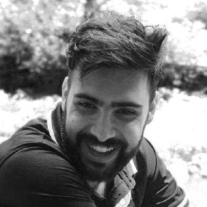

📜 Paper Acceptance in "IROS'24"!
October 07, 2024 at 12:30
I am delighted to share that our paper has been accepted in 14th Workshop on Planning, Perception and Navigation for Intelligent Vehicles in IROS'24 (pre-print)!